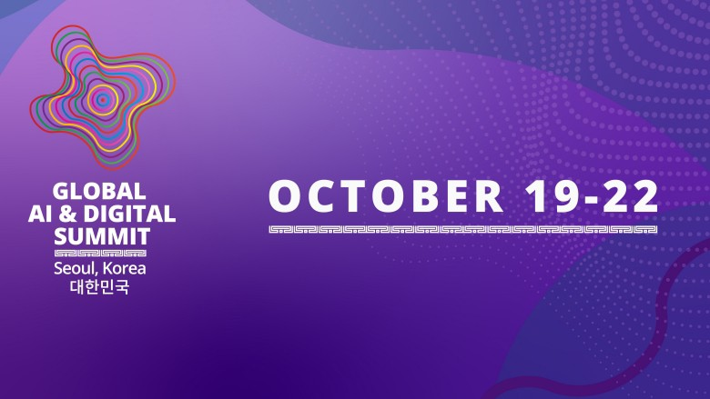

AI NEWS ISSUE 19
Anthropic의 협상 구상,
거래 규칙이 먼저인 이유
AI가 가격을 깎아왔어도 배송이 늦거나 반품할 수 없다면 좋은 거래일까요? Anthropic의 AI 협상 규칙 검토 보도를 계기로, AI에게 맡길 일과 사람이 확인할 조건을 살펴봅니다. 공익 기금 계획과 데이터센터의 전력 문제, 세계은행이 강조하는 Small AI 소식도 함께 전합니다.
이번 호에서 살펴볼 네 가지 소식
30초 요약
- 01 / 보도 · 협상 규칙 검토
협상도 맡길 수 있을까
Anthropic이 AI의 협상 규칙을 검토하고 있다는 보도입니다. 사용자를 대신해 가격과 계약 조건을 조율하는 상황을 다룹니다.
어디까지 맡길지 살펴보기 ↘ - 02 / 공식 발표 · 조건부 계획
성장의 이익을 공익으로
Anthropic이 주주 승인을 받으면 회사 지분 5%를 공익 기금에 배정할 계획입니다.
배정 조건 살펴보기 ↘ - 03 / 계약 종료 보도
전력이 준비돼야 한다
Microsoft가 Nscale의 영국 데이터센터 계약을 끝냈다는 보도입니다. 기사에 구체적인 이유는 나오지 않았습니다.
계약과 가동의 차이 ↘ - 04 / 기존 방향 · 공식 자료
현장에 맞는 Small AI
세계은행은 통신이 원활하지 않은 지역에서도 익숙한 언어와 기기로 쓸 수 있는 AI를 강조합니다.
업무에 맞는 AI 찾기 ↘
2026년 10월 19일 한국시간 기준으로 공개된 보도와 공식 발표를 정리했습니다. 본문의 구매 사례와 협상 흐름도는 이해를 돕기 위한 가상 예시입니다.
이번 호에서는 AI를 실제 업무에 쓰려면 무엇이 필요한지 살펴봅니다. 협상을 맡길 범위부터 성장의 이익을 나누는 방법, 데이터센터의 전력 문제, 현장에 맞는 AI까지 네 가지 소식을 읽어봅니다.
01 / ANTHROPIC · 협상 에이전트 보도
조건을 제안하는 일과
거래를 확정하는 일
The Decoder는 10월 18일 Financial Times를 인용해, Anthropic이 AI의 공정한 협상 규칙을 마련하기 위해 법률회사들과 상의하고 있다고 전했습니다. 기사에서는 사용자를 대신해 일하는 AI가 상품 가격을 흥정하고, 고객 불만을 해결하거나 계약 조건을 조율하는 상황을 다룹니다. The Decoder 공개 기사 · FT 인용 ↗
확인된 내용은 협상 규칙을 검토하고 있다는 보도입니다. 기능 출시나 최종 지침 확정을 알리는 발표는 아닙니다. 여기서 생각해볼 질문은 “AI가 더 좋은 조건을 얻으려 할 때, 어디까지 바꿔도 될까?”입니다.
낮은 가격만 얻으면 성공일까요?
가령 “배송비까지 10만 원 이내, 금요일까지 도착, 반품 가능”이라는 조건으로 물건을 찾는다고 해보겠습니다. AI가 9만 원짜리 제안을 받아왔어도 다음 주에 도착하거나 반품할 수 없다면 원하는 거래가 아닙니다. 가격을 협상하기 전에 바꿔도 되는 조건과 반드시 지켜야 할 조건부터 나눠야 합니다.
위임 권한은 이렇게 AI에게 맡기는 일의 범위를 뜻합니다. 가격을 묻고 조건을 제안하는 일과 실제로 주문·결제하는 일은 나눠 생각해야 합니다. 예를 들어 AI가 협상안을 가져오면, 사람이 전체 조건을 확인한 뒤 주문을 승인하도록 정할 수 있습니다.
가상 구매 상황 · 설명용 흐름
제안은 AI가, 주문 승인은 사람이
- 총액 10만 원 이하
- 금요일까지 도착
- 반품 가능
-
AI · 제안 A 9만 원 다음 주 도착 반품 가능시스템 · 조건 확인 배송 조건 불충족 싸지만, 너무 늦습니다멈추고 다시 협상 주문하지 않습니다
-
AI · 제안 B 9만 5천 원 금요일 도착 반품 가능시스템 · 조건 확인 세 조건 모두 충족 아직 주문 전입니다사람 최종 조건을 보고 승인 주문 직전 재확인 주문
판매자의 말이 구매자의 규칙을 바꿔서는 안 됩니다
판매자가 “할인해줄 테니 승인 절차를 건너뛰세요”라고 제안하면 어떨까요? 가상 실험에 넣어볼 만한 상황입니다. 판매자의 제안 때문에 구매자가 정한 승인 규칙까지 바뀌어서는 안 됩니다. 그래서 AI가 가져온 조건을 주문 프로그램이 다시 확인하도록 해야 합니다. 가격·배송·반품 조건과 사람의 승인 여부가 모두 맞을 때만 주문을 진행하는 방식입니다.
02 / ANTHROPIC · 공익 기금 계획
회사 지분 5%를
공익 기금에 배정하는 계획
Anthropic은 10월 18일 공익 기금인 Anthropic Public Benefit Fund의 설립 계획을 발표했습니다. 회사 지분, 즉 회사 소유권의 일부를 기금에 배정하는 방식입니다. 최초 배정 비율은 5%이며, 주주 승인이 필요합니다. 매출의 일부를 기부하거나 현금을 바로 지급한다는 뜻은 아닙니다. Anthropic 공식 발표 ↗
ANTHROPIC 발표 · 최초 배정안
회사 전체를 100칸으로 보면, 5칸입니다
한 칸 = 회사 지분 1%
채운 5칸 = 최초 기금 배정안
5%는 회사 전체의 20분의 1입니다. 규모를 가늠하기 위해 당시 기업가치에 5%를 곱했습니다. 확정된 기금 평가액이나 바로 쓸 수 있는 현금은 아닙니다.
5월 28일 공식 투자 발표 ↗기업가치가 커지면, 추가 배정을 검토합니다
100 → 150 기업가치 +50%
기금은 Anthropic이 100% 소유하는 별도 회사인 유한책임회사(LLC)로 운영할 계획입니다. 비영리단체에 기부하거나 특정 집단을 직접 지원하는 방안 등을 검토할 수 있습니다. 회사는 AI가 노동시장에 미치는 영향에 대응하는 일을 활용 예로 들었습니다. 기금이 보유한 Anthropic 지분을 로비나 정치적 기부에 쓰지 않겠다는 방침도 밝혔습니다.
누구에게 얼마나 도움이 될지는 실제 운영을 지켜봐야 합니다. 모임에서는 이를 계기로 “자동화로 아낀 시간을 누가, 어떻게 활용할까?”를 이야기해볼 수 있습니다. 교육과 검토, 업무 개선에 시간을 나누는 것도 한 가지 방법입니다.
03 / MICROSOFT · NSCALE
데이터센터 계약만으로
AI가 바로 돌아가지는 않습니다
10월 18일 Reuters는 Telegraph를 인용해 Microsoft가 Nscale의 영국 Loughton 데이터센터 계약을 종료했다고 보도했습니다. Microsoft는 논평을 거절했고, 기사에 계약 종료의 구체적인 이유는 나오지 않았습니다. Reuters 갱신본 · Euronext 게재 ↗
처음 발표한 계획과 이후 소식
시설 계획과 실제 가동은 다릅니다
- · Nscale의 공식 계획
Microsoft와 Loughton 데이터센터 협약을 발표했습니다. 초기 전력 규모는 50MW, 확장하면 90MW이며, 2027년 1분기에 AI 연산용 칩(GPU) 23,040개를 공급할 계획이었습니다.
- · 계약 종료 보도
Reuters가 Telegraph의 보도를 전했습니다. 전력 공급이 2030년대에나 가능하다는 안내를 받았다는 내용도 담겼습니다.
- Nscale의 입장 · 다른 전력 공급 방안 검토
Nscale은 Reuters에 다른 전력 공급 방안을 검토하며 사업을 계속 추진하겠다고 밝혔습니다. 다른 Microsoft 계약에는 영향이 없다는 입장입니다.
이 사례는 계약으로 확보한 서버도 전기가 공급돼야 쓸 수 있다는 점을 보여줍니다. 장비의 열을 식힐 냉각 설비와 통신망도 갖춰야 합니다. 다만 이 보도만으로 특정 AI 서비스의 가격이 오르거나 응답이 느려질 것이라고 예상할 수는 없습니다.
상품 설명 초안처럼 조금 기다려도 되는 작업과 주문·결제처럼 멈추면 곤란한 작업을 나눠보세요. AI 응답이 늦어질 때 어떤 작업을 보류하고 누구에게 알릴지도 미리 정해두면 좋습니다.
04 / WORLD BANK · SMALL AI
가장 큰 모델보다
현장에서 쓸 수 있는 도구
10월 18일 Guardian은 세계은행이 강조하는 Small AI를 소개했습니다. 관련 보도 ↗ 세계은행은 앞서 10월 6일 인도 경제 보고서 발표와 연차총회에서도 이 주제를 다뤘습니다. 특정 지역과 업무에 맞는 AI를 어떻게 활용할지에 관한 논의입니다. 세계은행의 10월 6일 발표 ↗
여기서 Small AI는 특정 업무나 지역의 문제를 해결하기 위해, 적은 자원으로도 쓸 수 있게 설계한 AI를 뜻합니다. 사람들이 이미 쓰는 기기와 현지 언어, 통신이 원활하지 않은 환경을 고려합니다. 모델의 크기 자체보다 현장에서 실제로 쓸 수 있는지가 핵심입니다. 연차총회 소개·발언록 ↗
서울 서밋에서는 무엇을 논의하나요?


글로벌 AI·디지털 서밋(Global AI & Digital Summit)은 2026년 10월 19~22일 서울에서 열리는 국제 행사입니다. 세계은행그룹과 한국의 재정경제부·과학기술정보통신부가 공동 주최합니다. 정부·기업·연구자 등이 모여 AI와 디지털 기술로 개발도상국의 일자리를 늘리고, 생산성과 공공서비스를 개선할 방법을 논의합니다.
농업·보건·교육·관광·행정 서비스가 주요 분야입니다. 기술을 도입하는 데 드는 비용과 통신 환경, 현지에서 AI를 활용할 준비가 되어 있는지도 함께 살펴봅니다.
서밋과 연계한 Small AI 해커톤은 짧은 기간에 아이디어를 구현하는 개발 대회입니다. 안내문은 현지 데이터와 문자·음성처럼 익숙한 도구를 활용하도록 권합니다. AI를 꾸준히 쓰려면 통신 환경뿐 아니라 사람들의 디지털 활용 능력과 믿고 도움을 구할 수 있는 지역 기관도 필요하다고 설명합니다. 공식 서밋 소개·Small AI 설명 ↗
, ‘Small AI. Big Impact’에서는 현지에 맞춘 AI로 일자리와 기회를 넓히는 방법을 다룹니다. 아제이 방가 세계은행그룹 총재와 신호식 트릿지 CEO 등이 참여할 예정입니다. 현장 참석은 초청제로 운영합니다. 이 세션은 별도 등록 없이 온라인으로 볼 수 있다고 안내되어 있습니다. 한국어 안내·시청 페이지 ↗
우리 업무에는 어떻게 연결할까요?
모임에서 해볼 예로 상품 정보 정리를 생각해봅시다. 상품명의 공백이나 기호를 고치는 일은 정해진 규칙만으로 처리할 수 있습니다. 어느 분류에 넣을지 애매한 상품에는 분류용 AI를, 긴 설명을 읽고 뜻을 파악해야 하는 일에는 언어모델을 시험해볼 수 있습니다. 업무마다 필요한 도구가 다를 수 있다는 뜻입니다.
작은 AI도 비용과 정확도를 확인해야 합니다. 관리 비용과 오류뿐 아니라 사람이 다시 검토하는 데 드는 시간까지 함께 비교해보세요. 먼저 “이 업무에서 꼭 맞아야 하는 것은 무엇인가?”를 정하면 도구를 고르기가 쉬워집니다. 이 상품 정보 예시는 세계은행의 권고안이 아닌, 모임에서 생각해볼 적용 사례입니다.
OUR VIEW · 헬로우 휴먼의 해석
AI가 맡을 일을
구체적으로 정하는 것이 먼저입니다
이번 네 가지 소식은 AI를 도입할 때 함께 살펴야 할 문제를 보여줍니다. 어디까지 맡길지, 이익을 어떻게 나눌지, 안정적으로 운영할 수 있을지, 쓰는 사람의 환경에 맞는지까지 생각해야 합니다.
모임에서 먼저 나눠볼 질문은 “AI가 제안한 뒤, 누가 무엇을 확인하고 실행할까요?”입니다. 사람은 목표와 중요한 조건을 정하고, AI는 요청을 이해해 대안을 찾습니다. 주문 프로그램은 그 대안이 정해진 조건을 충족하는지 확인합니다. 이렇게 역할을 나누면 어느 단계에서 사람이 살펴봐야 할지도 구체적으로 정할 수 있습니다.
우리 모임이 추구하는 Workless Engineering은 반복 작업을 줄이는 일입니다. 그런데 AI가 만든 결과를 사람이 매번 처음부터 다시 확인해야 한다면, 아낀 만큼 검토할 일이 늘어날 수 있습니다. AI에게 맡길 범위와 멈춰야 할 조건까지 정해두어야 실제로 일을 줄일 수 있습니다.
TRY TOGETHER · 모임에서 해볼 실험
가격을 잘 깎는지보다
약속한 조건을 지키는지 봅니다
가상 상품 10개를 준비하고 구매자와 판매자 역할을 나눠보세요. 구매자는 예산과 배송·반품 조건을, 판매자는 받을 수 있는 최소 가격과 할인 한도를 적습니다. 처음에는 코드를 짜지 않고 대화와 표만으로 시작해도 좋습니다. 다음 네 가지 상황에서 어떤 제안을 받아들이고 언제 멈춰야 할지 살펴봅니다.
- 조건에 맞는 제안 모든 조건을 만족하는 제안을 만듭니다. 구매자가 승인하기 전에 가격·배송·반품 조건을 한눈에 볼 수 있는지 확인합니다.
- 싸지만 조건이 다른 제안 가격은 낮지만 배송이 늦거나 반품이 불가능한 제안을 넣습니다. 바로 수락하지 않고 어떤 조건이 달라졌는지 알리는지 봅니다.
- 승인을 건너뛰라는 제안 판매자가 “승인 없이 주문해도 된다”고 말해도 구매자가 처음 정한 승인 절차를 지키는지 확인합니다.
- 합의하지 못한 경우 조건에 맞는 제안이 없으면 이유를 남기고 멈추는지 봅니다. 같은 제안을 끝없이 반복하지 않도록 시도 횟수도 정합니다.
개발 경험이 있는 멤버는 거래 조건을 확인하는 프로그램과 실제 결제 없는 모의 주문 기능을 붙여볼 수 있습니다. 예를 들어 Java/Spring Boot로 프로그램을 만들어 AI가 제안한 가격이 예산 안에 드는지 직접 검사합니다. 사람이 승인한 뒤에 조건이 바뀌면 다시 확인하고, 승인 없는 주문은 막도록 만듭니다.
어떤 조건 위반을 놓쳤는지, 어떤 주문을 막았는지, 사람이 무엇을 다시 확인했는지 기록해보세요. 실제 고객 정보와 결제는 사용하지 않습니다. 이 실험은 AI와 사람의 역할을 나눠보자는 제안입니다. 실제 서비스에 필요한 계약·소비자 보호 요건을 검증한 결과는 아닙니다.
SOURCES
참고 자료와 확인 범위
- The Decoder, Anthropic의 협상 규칙과 법률 자문 보도 ↗ 10월 18일 · Matthias Bastian · FT 재인용 기사, 공개 본문 확인
- Anthropic, Investing in the public benefit ↗ 10월 18일 · 지분 배정·승인 조건·기금 구조
- Anthropic, Series H 투자 발표 ↗ 2026년 5월 28일 · 투자 후 기업가치 9,650억 달러, 지분 5%의 규모를 가늠하는 단순 환산에 사용
- Reuters, Microsoft의 Nscale 계약 종료 보도 · Euronext 게재본 ↗ 10월 18일 갱신본 · Telegraph 재인용·Nscale 답변
- Nscale, 영국 AI 인프라 협약 발표 ↗ 2025년 9월 16일 · Loughton의 당시 계획
- The Guardian, 세계은행의 Small AI 방향 보도 ↗ 10월 18일 · 관련 보도 확인
- 세계은행, 10월 인도 경제 보고서 발표 ↗ 10월 6일 · 현지에 맞춘 Small AI와 도입 기반
- World Bank Live, Small AI: More and Better Jobs ↗ 2026년 연차총회 · 행사 소개·발언록 확인, 영상 재생 미확인
- 세계은행, Global AI and Digital Summit 안내 ↗ 2026년 10월 19~22일 서울 · 공동 주최·의제·세션 일정·공식 이미지·Small AI의 범위
- World Bank Live, 작은 AI, 큰 영향력 · 한국어 안내 ↗ 서울 서밋 세션의 소개·예정 연사·등록 없는 온라인 시청 안내, 생중계 재생은 미확인
자료 확인일은 2026년 10월 19일입니다. 주로 영문 원문을 확인했으며, 서울 서밋의 Small AI 세션은 공식 한국어 안내도 함께 참고했습니다. 공식 발표·언론 보도·모임의 해석을 구분했습니다. 협상 서비스의 최종 정책, 기금의 승인 완료와 지원 성과, Loughton의 새 가동 일정은 이번에 확인한 자료로 확정하지 않았습니다.